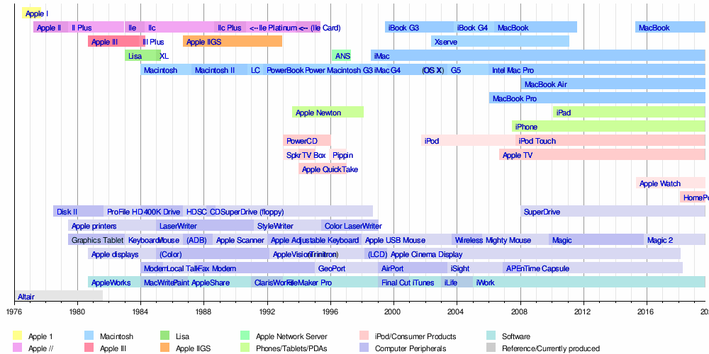

a
About Apple
Apple is vooral bekend van zijn reeks Apple Macintosh-computers, de iPod-muziekspelers, de iPhone-smartphone en de iPad. Naast hardware ontwikkelt het zelf ook veel software voor het eigen macOS, maar ook voor Windows. Eind jaren zeventig is Apple bekend geworden met de Apple II, een van de eerste succesvolle personal computers ter wereld. De Apple II speelde een essentiële rol bij de opkomst van de pc-markt. Aan deze reeks van kleine successen kwam echter een abrupt einde door een op handen zijnd bankroet. In 1997 stond het bedrijf aan de rand van de afgrond, maar met een investering van 160 miljoen dollar (door Microsoft) is het bedrijf weer op de been geholpen. Microsoft is sindsdien dan ook aandeelhouder.
